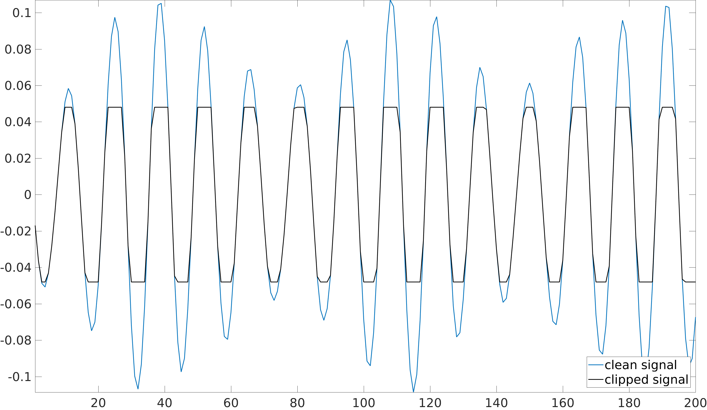
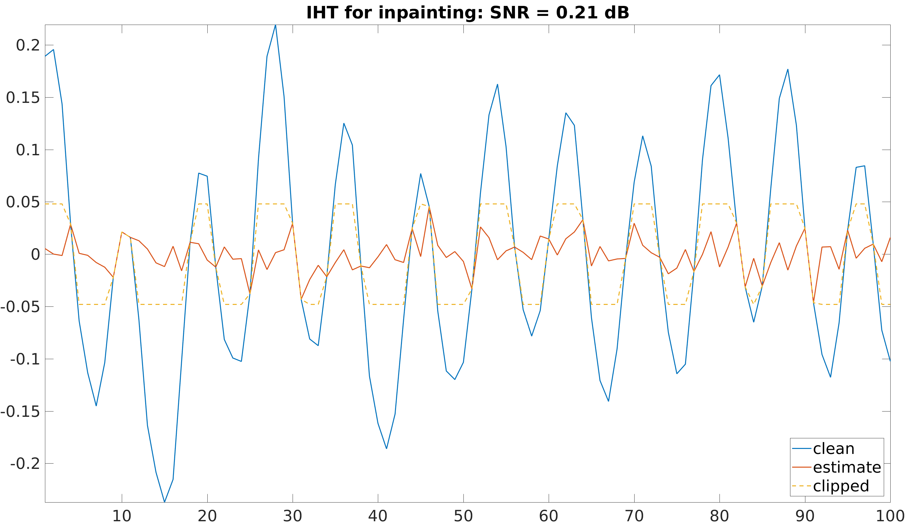
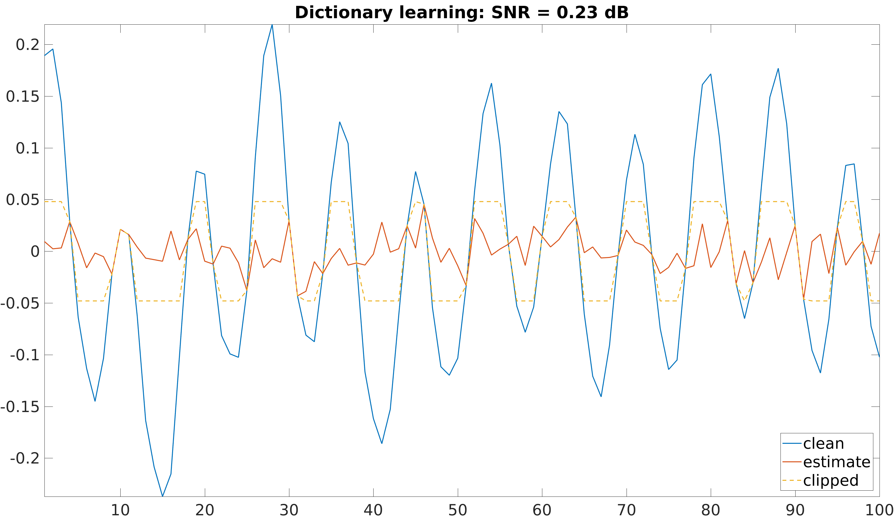
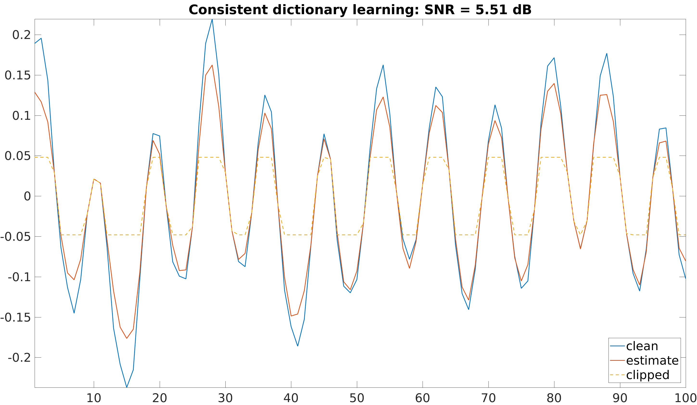
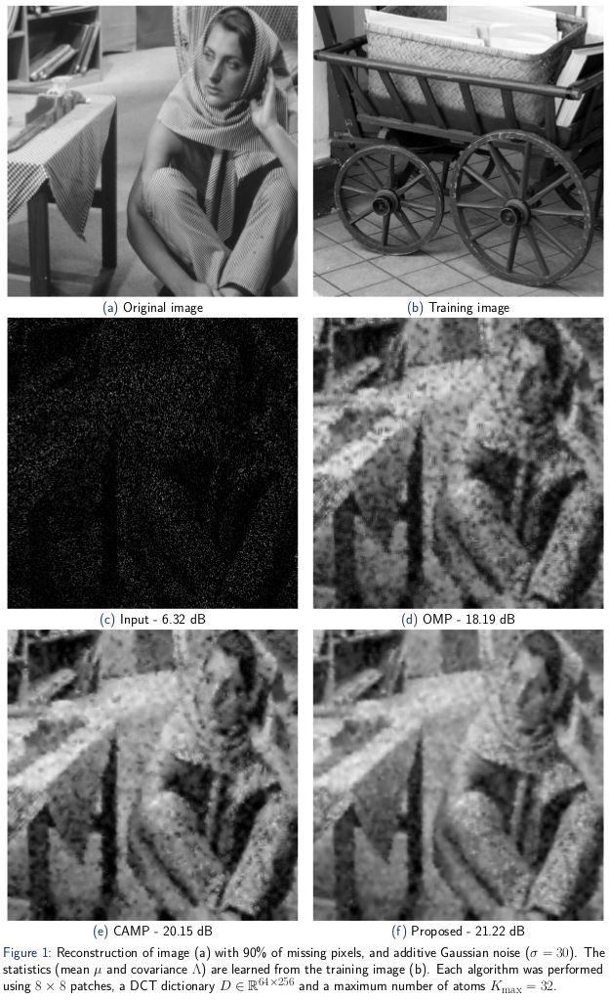

Software/Demos
You can find some demos and software here:
- Consistent dictionary learning for signal declipping
- A greedy algorithm with learned statistics for sparse signal reconstruction
Consistent dictionary learning for signal declipping
Clipping is a common nonlinear distortion in signal processing. Clipping often happens due to dynamic range limitations in software or hardware systems, when the waveform is truncated above a certain level:

\( \def\x{{\mathbf x}} \def\z{{\mathbf z}} \def\y{\mathbf{y}} \def\r{\mathbf{r}} \def\d{\mathbf{d}} \def\D{{\mathbf D}} \def\X{{\mathbf X}} \def\A{{\mathbf A}} \DeclareMathOperator{\Mr}{\mathbf{M^r}} \DeclareMathOperator{\Mc}{\mathbf{M^{c}}} \DeclareMathOperator{\Mcp}{\mathbf{M^{c+}}} \DeclareMathOperator{\Mcm}{\mathbf{M^{c-}}} \DeclareMathOperator{\bfalpha}{\alpha} \DeclareMathOperator{\Cyt}{\mathcal{C}(\y_t)} \DeclareMathOperator{\Cy}{\mathcal{C}(\y)} \DeclareMathOperator*{\argmin}{argmin} \DeclareMathOperator*{\dEU}{d} \)The received signal can be written as: \[ \y = \Mr \x + \theta^+ \Mcp \mathbf{1} + \theta^- \Mcm \mathbf{1}, \] where \(\x\) is the input signal, \(\mathbf{1}\) is the all-ones vector in \(\mathbb{R}^{N}\), \(\theta^+/\theta^-\) are positive negative clipping thesholds respectively, and \(\Mr, \Mcp\) and \(\Mcm\) are diagonal sensing matrices in \(\{0,1\}^{N \times N}\) that define the reliable, positive and negative clipped samples respectively.
Recovering a clipped signal is a challenging inverse problem, since the distortion is nonlinear and high energy samples are missing.
Declipping can be treated as a signal inpainting problem, i.e. discarding the clipped samples and performing sparse decomposition on the reliable (unclipped) samples:
\[ \min_{\bfalpha \in \mathbb{R}^M} \|\Mr(\y-\D\bfalpha)\|_2^2 \quad \text{s.t.} \quad \|\bfalpha\|_0\leq K. \]However this approach fails when the signal is highly clipped. Here is an example of declipping a glockenspiel signal (here 73% of the samples are clipped), using Iterative Hard Thresholding (IHT) with a twice redundant DCT dictionary:

The algorithms fails to reconstruct the clipped samples from the low energy unclipped samples. Dictionary learning has been shown to lead to reconstruction improvement in various inverse problems such as denoising or inpainting, compared to a fixed DCT dictionary. Dictionary learning for signal declipping can also be formulated by simply discarding the clipped samples and learning from the reliable samples:
\[ \min_{\D \in \mathcal{D}, \alpha_t} \sum_t\|\Mr_t(\y_t-\D\bfalpha_t)\|_2^2 \quad \text{s.t.} \quad \forall t, \|\bfalpha_t\|_0\leq K \]However, state-of-the-art dictionary learning algorithms also fail to reconstruct clipped signals, as can be seen here:

We proposed a dictionary learning algorithm that enforces consistency with the clipped samples, i.e. it enforces the reconstructed clipped samples to be above the clipping threshold. This can be formulated as: \[ \min_{\D \in \mathcal{D}, \bfalpha_t} \sum_t \dEU (\D\bfalpha_t, \mathcal{C}(\y_t))^2 \quad \text{s.t.} \quad \forall t, \|\bfalpha_t\|_0\leq K, \] where \(\mathcal{C}(\y)\) is the set of admissible signals, i.e. the set of signals that are consistent with the measured signal \(\y\): \[ \mathcal{C}(\y) \triangleq \{\x| \Mr \y=\Mr \x, \Mcp \x \succeq \Mcp \y, \Mcm \x \preceq \Mcm \y\}, \] and \(\dEU (\x, \mathcal{C}(\y))\) is the Euclidean distance between the estimated signal \(\x\) and the set \(\mathcal{C}(\y))\): \[ \dEU (\x, \mathcal{C}(\y)) = \min_{\z \in \mathcal{C}(\y)} \|\x-\z\|_2. \]
The proposed algorithm leads to significant performance improvement compared to state-of-the art dictionary learning algorithms applied to declipping:

You can find the pre-print here and the MATLAB code here.A greedy algorithm with learned statistics for sparse signal reconstruction
Orthogonal Matching Pursuit (OMP) is a greedy algorithm that solves: \[ \min_{\bfalpha \in \mathbb{R}^M} \|\y-\D\bfalpha\|_2^2 \quad \text{s.t.} \quad \|\bfalpha\|_0\leq K. \] using coordinate descent, i.e. optimizing each coefficient one at a time. This can be seen as a Maximum-Likelihood (ML) estimate of the coefficients under a Gaussian noise, along with a sparsity constraint.
We proposed instead to solve a Maximum-A-Posteriori estimation, under a Gaussian prior: \[ \min_{\bfalpha \in \mathbb{R}^M} (\y-\D\bfalpha)^T\Sigma^{-1}(\y-\D\bfalpha) + (\bfalpha-\mu)^T\Lambda^{-1}(\bfalpha-\mu) \quad \text{s.t.} \quad \|\bfalpha\|_0\leq K, \] where \(\mu\) and \(\Lambda\) are the mean and covariance of the sparse coefficients respectively, and \(\Sigma\) is the noise covariance matrix. The mean and covariance are simple first order statistics, and can be learned on from a clean training image. The mean and covariance provide extra information that can help the reconstruction. In particular, the diagonal elements of the covariance matrix model the a-priori energy of the sparse coefficients, and the non-diagonal elements model the correlation between coefficients. We proposed a greedy OMP-like algorithm that minimizes the proposed MAP formulation. We compare with the baseline OMP, and the recently proposed Covariance-Assisted Matching Pursuit (CAMP). The proposed algorithms shows significant improvement image reconstruction from a few noisy measurements.

The paper can be found here. The code will be made available soon.